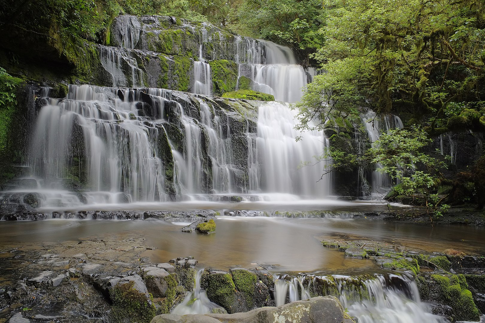

Purakaunui Falls, the most photographed New Zealand waterfall, is located in the heart of the Catlins Forest Park. Easy walk to the waterfall's lookout and unique beauty make this falls one of the best places to visit with your family, and it’s included into New Zealand Must See Waterfalls list.
Remember to upload the source image listed below into your Drupal site.
Unit5/images/PurakaunuiFalls.jpgPreview of image to use:
South Island
Easy
Purakaunui Falls is roughly a 1.5-2 hours’ drive away from either Invercargill or Dunedin. The road surface is sealed, which becomes a gravel road for the last 2 km.
From Dunedin travel south on the SH1, then turn left into the scenic Chaslands Highway and follow it for the next 43 km. When you see a sign ‘Purakaunui Falls’, turn left into Waikoato Valley Rd, which becomes a gravel road, and finally, turn left into Purakaunui Falls Rd. The parking, on you left, has toilets and picnic tables.
From the carpark follow the official Purakaunui Falls Walk which leads to the waterfall’s viewing platforms - Upper and Lower ones. The walk to the Upper platform (10 minutes one way) is very easy one and suitable for people of all abilities, it has no stairs and all the streams are bridged.
From here it's 5-7 minutes further walk down the wooden stairs which brings you to the Lower platform. This part of the walk is not suitable for wheelchair/kids strollers. We highly recommend to complete the full walk - the Lower platform offers you the best view of the falls.
The best time for photography is the late autumn when the waterfall is accompanied by colorful trees.
Return via the same route.
http://waterfalls.co.nz/waterfalls-by-region/90-new-zealand-waterfalls/south-island/southland/220-purakaunui-falls
20
20
https://www.youtube.com/watch?v=I7uxMb-Lp7IVideo preview
http://www.doc.govt.nz/parks-and-recreation/tracks-and-walks/otago/coastal-otago/catlins-waterfalls-walks/Acquia Inc. | Acquia Academy Drupal Site Building course | Drupal is a registered trademark of Dries Buytaert.